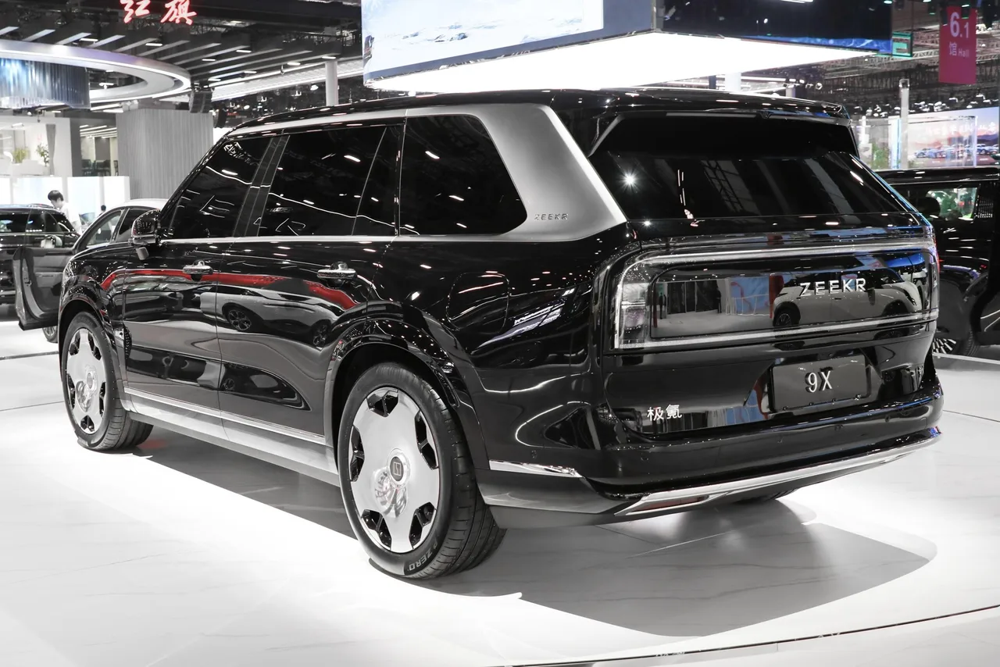

▲ 지커 9X의 세로 슬랫 크롬 그릴과 직사각형 차체 비율이 롤스로이스 컬리넌을 연상시켜 '중국판 컬리넌'이라는 별명이 붙었다
중국 프리미엄 전기차 브랜드 지커가 플래그십 대형 SUV '9X'를 유럽 시장에 투입하면서, BMW X7과 메르세데스-벤츠 GLS가 주도해온 대형 럭셔리 SUV 시장에 도전장을 던졌습니다. 그리고 이 차, 내년 한국에도 상륙할 예정입니다. 이미 지커 7X로 국내 사전계약 1,000대를 넘긴 지커의 다음 카드인 셈입니다.
1. 왜 '중국판 컬리넌'이라 불리나

▲ 후면부도 각진 테일램프와 절제된 라인으로 럭셔리 SUV 특유의 존재감을 강조했다
지커 9X가 이런 별명을 얻은 이유는 명확합니다. 대형 직사각형 그릴과 수직형 차체 비율, 절제된 측면 디자인이 영국의 초호화 SUV 롤스로이스 컬리넌을 강하게 연상시키기 때문입니다. 전장 5,239mm, 전폭 2,029mm, 전고 1,819mm에 휠베이스 3,169mm의 대형 차체로, 크기 면에서도 BMW X7 등 경쟁 모델에 밀리지 않습니다.
2. 파워트레인 — 유럽·한국형 897마력, 중국 최고 트림은 1,381마력
지커 9X의 파워트레인은 시장별로 다릅니다. 유럽과 한국에 들어올 사양은 2.0L 4기통 엔진에 전기모터 2개를 결합한 '슈퍼 하이브리드'로 897마력을 냅니다. 반면 중국 내수 최고 트림은 여기에 모터 하나를 더한 트리모터 구성으로 1,381마력(1,030kW)까지 끌어올렸고, 0-100km/h 가속은 3.1초에 불과합니다. 유럽·한국형인 897마력 버전은 0-100km/h 4.1초, 최고속도 240km/h를 기록합니다.
| 구분 | 유럽·한국형 | 중국 최고 트림 |
|---|---|---|
| 모터 구성 | 2.0L 엔진 + 전기모터 2개 | 2.0L 엔진 + 전기모터 3개 |
| 합산 출력 | 897마력 | 1,381마력(1,030kW) |
| 0-100km/h | 4.1초 | 3.1초 |
| 최고속도 | 240km/h | - |
| 좌석 | 6인승 | 5·6인승 |
3. 900V 아키텍처 — 10~80% 충전 9분 30초
지커 9X는 900V 초고압 아키텍처를 채택해 10~80% 배터리 충전을 단 9분 30초 만에 마칩니다. 복합 주행거리는 737km에 달해, 순수 전기 주행과 엔진 발전을 오가는 플러그인 하이브리드 특성상 장거리 이동에도 충전 걱정이 크지 않습니다. 중국 내수형은 배터리 용량에 따라 55kWh(전기 주행거리 300km)와 70kWh(전기 주행거리 380km) 두 가지로 나뉘며, 트림에 따라 순수 전기 주행거리만으로도 300km 이상을 확보합니다.
4. 실내 — 나파 가죽, 스웨이드 헤드라이너, 냉장고까지

▲ 나파 가죽과 스웨이드 헤드라이너, 대형 센터 디스플레이로 꾸며진 지커 9X의 실내
실내 구성도 '럭셔리'라는 수식어에 걸맞습니다. 전 좌석에 나파 풀그레인 가죽을 적용했고, 천장은 스웨이드 소재, 트림은 천연 목재로 마감했습니다. 2열 승객을 위해서는 1.4m에 달하는 레그룸에 파워 레그레스트, 제로 그래비티 모드, 열선·통풍·마사지 기능까지 갖췄습니다. 천장에는 스크린이 내장돼 있고, 오디오는 32개의 Naim 브랜드 스피커로 구성됩니다. 여기에 차량용 냉장고와 무선 스마트폰 충전 패드까지, 동급에서 보기 드문 편의사양을 총동원했습니다.
5. 실제 타보니 — "롤스로이스처럼 부드러운 가속"
해외 매체 CarExpert의 짧은 시승기에 따르면, 지커 9X의 가속감은 "롤스로이스처럼 부드럽고 수월하게 구성돼 있다"는 평가를 받았습니다. 스로틀을 밟으면 "선체처럼 앞이 하늘로 향한다"는 표현까지 나올 정도로 부드러운 가속 특성을 보였고, 실제로 약 90m 구간에서 수월하게 시속 100km에 도달했습니다. 다만 22인치 대형 휠과 에어서스펜션을 갖췄음에도 불구하고 과속방지턱을 지날 때는 예상보다 강한 진동이 전달됐다는 지적도 있었습니다. 나파 가죽 시트와 스웨이드 헤드라이너, 목재 트림으로 꾸며진 실내는 "호화로운 분위기"라는 호평을 받았지만, 주차장 안에서 진행된 제한적인 시승이었던 만큼 실도로 주행 평가는 추후 보완이 필요한 상태입니다.
6. 국내 럭셔리 SUV 시장에 미칠 영향
지커는 이미 국내에 7X를 출시해 보조금 없이도 사전계약 1,000대를 넘기며 존재감을 확인한 바 있습니다. (관련 기사: 지커 7X 가격·제원 총정리) 9X가 실제로 한국에 들어온다면, 그동안 BMW X7·메르세데스-벤츠 GLS·아우디 신형 Q9이 양분해온 대형 럭셔리 SUV 시장에 중국 브랜드가 본격적으로 도전장을 내미는 첫 사례가 될 전망입니다. 최첨단 전동화 기술과 파격적인 편의사양을 앞세운 중국 프리미엄 브랜드가 국내 수입차 시장의 변수로 떠오를 수 있다는 관측이 나오는 이유입니다.
7. 아직 확인해야 할 것들
가격, 정확한 출시일 등 아직 확정되지 않은 부분이 많지만, '중국판 컬리넌'이라는 별명을 단 이 차가 국내 럭셔리 SUV 시장에 어떤 파장을 일으킬지는 지켜볼 만합니다.